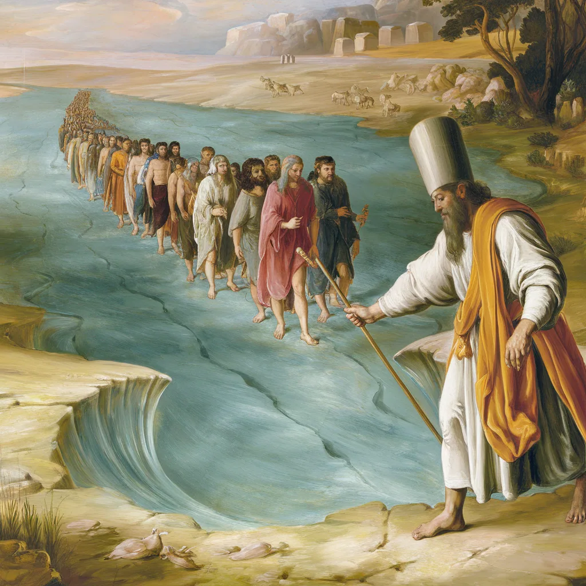

נר חנוכה ואהבת ה'

אור ההודיה: עיון מעמיק במהות נר חנוכה ואהבת ה'
הספר
במארג העשיר של המצוות והמנהגים ביהדות, מעטות הן המצוות הטומנות בחובן רבדים כה עמוקים של משמעות כמו הדלקת נרות חנוכה. חיבור זה מבקש להאיר את המשמעות העמוקה של מצווה אהובה זו, תוך חקירת היותה מופת להבנת מערכת היחסים שבין אהבת ה' והכרת הטוב האנושית. באמצעות ניתוח מעמיק של מקורות חז"ל וההגות היהודית לדורותיה, נגלה כיצד המאפיינים הייחודיים של מצוות נר חנוכה משקפים עקרונות יסוד של המחשבה היהודית בנוגע לעבודת ה', הכרת הטוב והשאיפה למצוינות רוחנית.
תְּפִלָּה לִזְכּוֹת לְהַפְנִים וּלְקַיֵּם
התפילה משלבת בתוכה את הרעיונות המרכזיים מהספר: הודיה, אהבה והידור, תוך התייחסות לקושי האנושי ולכמיהה להתעלות. היא משקפת את המתח בין ההבנה השכלית לבין הצורך בהפנמה רגשית, ומבטאת את הרצון להפוך את הלימוד התיאורטי לחוויה מעשית ורגשית.
שירה
תפילת אור ההודיה
סיפור על אהבה והודיה
סיפור
הסיפור משלב את הרעיונות העמוקים של הספר - ההידור, ההודיה והאהבה - דרך נרטיב אישי ומרגש. הוא מראה כיצד המסורת והערכים עוברים מדור לדור, וכיצד חפץ פשוט יכול לשאת משמעות עמוקה כשהוא טעון בסיפור של אהבה והודיה.
בג
אודות
זה המקום שבו תוכל לספר ללקוחותיך על מהות האתר והעסק שלך.
פרומפטים שונים


מגנט מס' 4 - לחתונה
עם המעלות הנפלאות שיש לומר מזמור לתודה בחתונה
מתאים למזכרת לבת מצווה, חתונה וכד' כמו כן מתאים לשים על המקרר על הדלת לזכות תמיד להודות לבורא
מגנט מספר חמש
מזמור לתודה אינו בטל לעולם

יצירת כרטיסיות לימוד
שיעור מובנה כמה חלקים
"תכין כרטיסיית מידע על ???? הכוללת: שאלה אמריקאית שאלת ידע והבנה שאלה מסדר חשיבה גבוה שאלה ערכית"

פרומפט לניהול דיון כיתתי
כתיבת הרצאה
הקול החמישי - בחתונה

רעיונות נפלאים להודיה בחתונה

השיר - לכבוד החתן בחור מעם


תעלומת הקול החמישי


הלכות שבע ברכות


להחזיר את השפע

חנוכה והקול החמישי